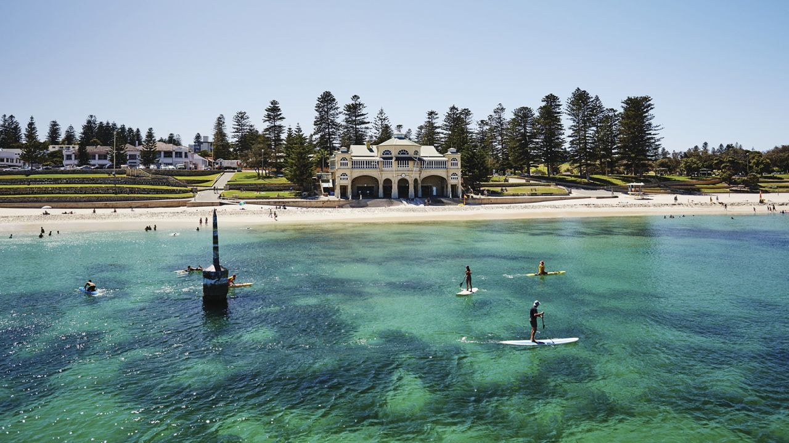
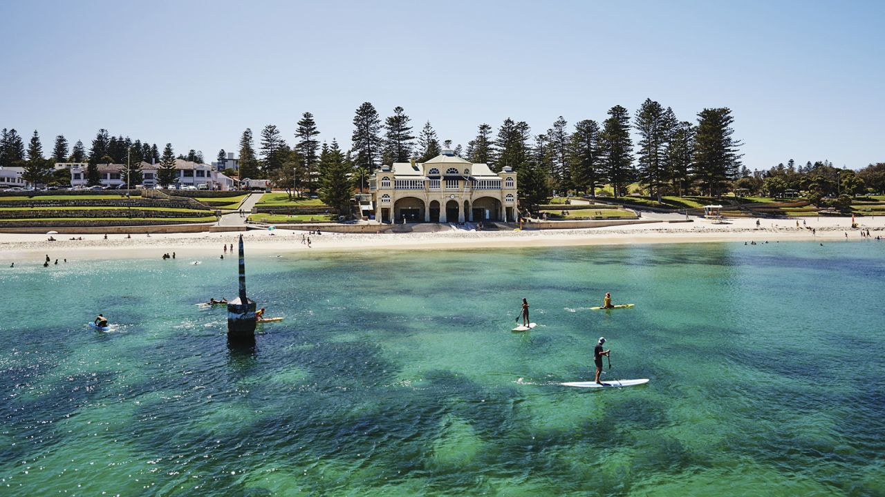
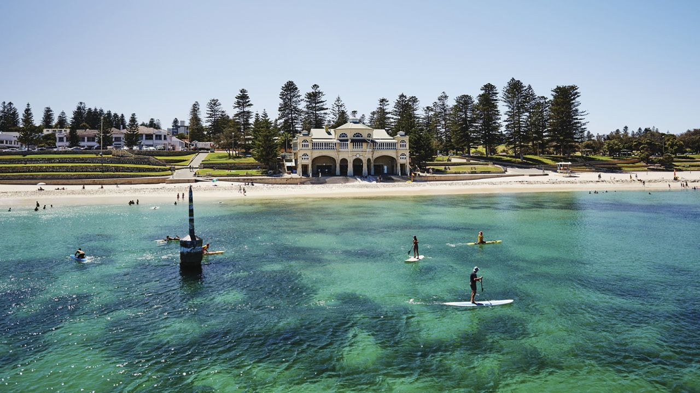

Perth é a capital do estado da Austrália Ocidental e a quarta maior cidade da Austrália em termos de população. Localizada na costa oeste do país, é uma cidade vibrante e cosmopolita, conhecida por sua beleza natural, estilo de vida descontraído e economia próspera.
A cidade de Perth está situada nas margens do rio Swan, e suas belas praias banhadas pelo Oceano Índico são uma característica marcante. A cidade é abençoada com um clima mediterrâneo, com verões quentes e secos e invernos suaves. Essas condições climáticas favoráveis proporcionam um ambiente agradável para desfrutar das diversas atividades ao ar livre disponíveis na região.
Perth tem uma economia diversificada e florescente, impulsionada por setores como mineração, energia, agricultura, turismo e serviços financeiros. A cidade tem sido um centro para a indústria de mineração na Austrália, devido à sua proximidade com importantes depósitos de minerais e recursos naturais. Além disso, Perth é um importante destino para estudantes internacionais, com várias universidades e instituições de ensino superior.
